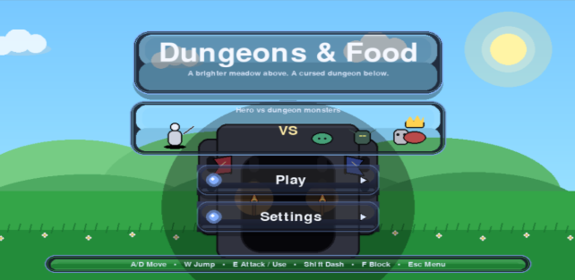
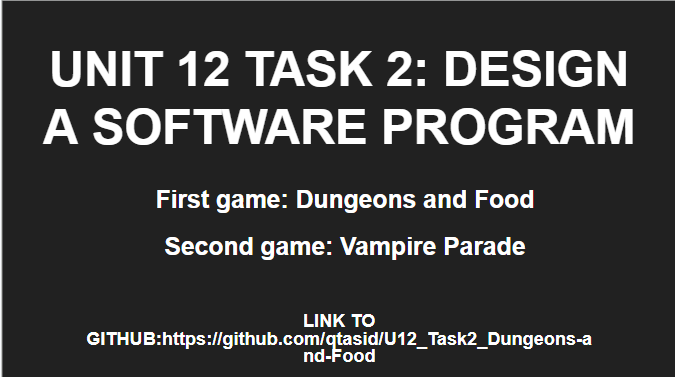

Unit 12 - Website Development

This unit explores how online services and internet technologies work.
Evidence

Assignment Evidence
Insert information about the work completed in Unit 1.
Download Slideshow Download Python Code View Github RepositoryReflection
During the process of creating my own game for a 7+ audience, I learned how important it is to design content that is fun, engaging, and easy to understand for younger players. I developed skills in planning gameplay, creating simple rules, and designing visuals that would appeal to children while still keeping the game interesting and enjoyable. I also learned how important creativity and problem solving are when developing a game. I had to think carefully about how players would interact with the game and how to make it challenging without becoming too difficult. Testing and improving the game helped me understand the value of feedback and how small adjustments can improve the overall experience for the audience. In the future, these skills could benefit me in careers related to game design, technology, digital media, or software development. The project also improved my communication, planning, teamwork, and creative thinking skills, which are valuable in many different industries.